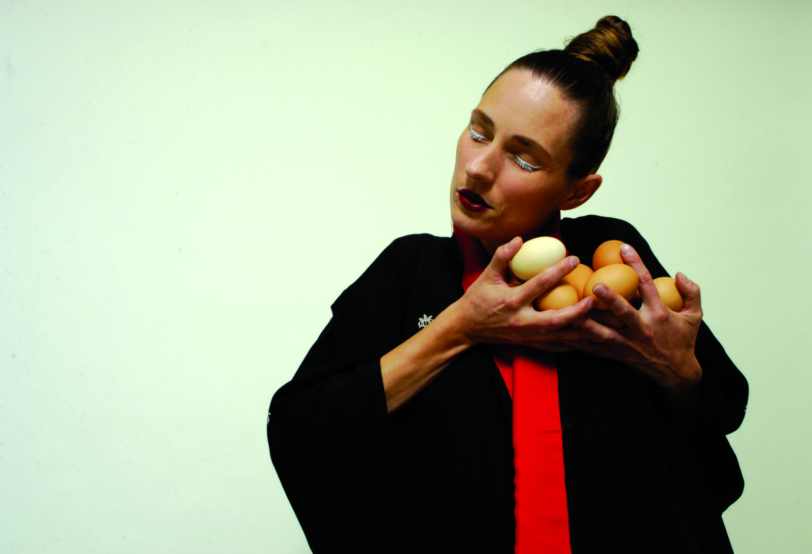
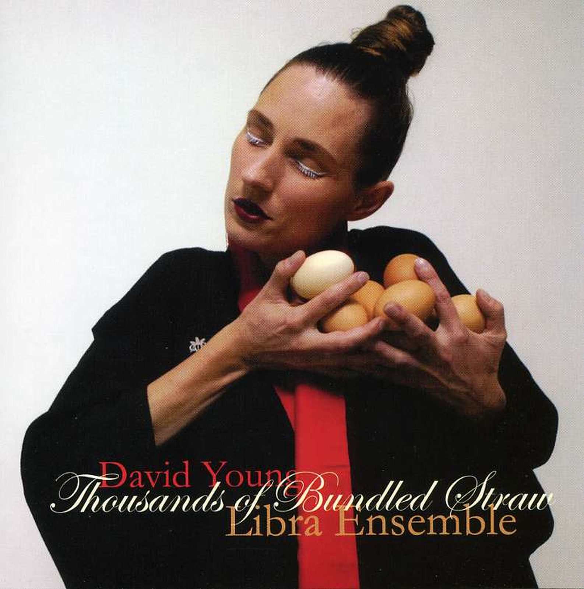

Thousands of Bundled Straw
This song cycle began in a fishing village near Hiroshima, where I was staying with a young Japanese composer I had met at the Akiyoshidai Contemporary Music Festival in 1997. Each morning I awoke to the sound of drumming and cicadas coming from the local Shinto temple (you can hear this in Movement IV). At night I wandered through ricefields and saw glinting fireflies appearing and disappearing behind the blades of rice. The song cycle replicates the structure of over-packaged Japanese cookies — boxes within boxes, each movement a sealed world inside the whole.

The title is Japlish and comes from a tourist brochure for Ichibata Yakushi, the Temple of the Healing Eyes on Lake Shinji-ko, in far-western Japan. According to myth, the fisherman Yoichi discovered a statue of the Buddha floating in the sea. In a dream it told him to wrap himself in bundles of straw and throw himself from a cliff. This way his blind mother’s eyes would be opened. He did as instructed and his mother could see. He founded the temple. The statue was placed inside a box within a box within a box behind the temple altar. It is displayed once every hundred years.
The cycle took ten years to finish, each movement commissioned and composed for different musicians. Movements were performed separately around the world before the whole was assembled.
Song 4 in Movement V was written first in that fishing village, for soprano Deborah Kayser and guitarist Geoffrey Morris, both of whom I worked with for 20 years.
The final movement — for the largest forces, the whole ensemble — was created last, and became a process of stripping back, reducing, clearing. How little I needed to insert or force or do. There is a moment in this movement where everything stops and Deborah’s voice sails over a static yet shifting texture in the ensemble. I had planned Song 5 in Movement V to be the vanishing point of the work. Instead, this floating moment — like the impossible statue floating on the sea — turned out to be the still point in my composing life. After it, I no longer wrote formally notated music.
Recording
Thousands of Bundled Straw: a song cycle in seven movements
David Young / Libra Ensemble
Live and studio recordings — Iwaki Auditorium, ABC Southbank Centre, Melbourne, 18–19 October 2005
© 2005 Libra Ensemble / Aphids
Sound engineer: Jim Atkins

Score
The score is a handwritten facsimile in seven parts, 260 pages. Duration 54′32″. Individual movements can be performed separately.
Further reading & links
Performance history
Movements IV, V & VI — first performances
Movement II — first performance
Movement III — first performance
Movement I — first performance
Complete cycle — world premiere · Movement VII world premiere
Complete cycle
Credits — Melbourne Recital Centre, 2009
Conductor Mark Knoop
Recorder Tosiya Suzuki
Oboe Adam Yee
Clarinets Carl Rosman
Trumpet Ben O’Callaghan
Trombone Ben Marks
Percussion Peter Neville
Piano Timothy Young
Guitar Geoffrey Morris
Violin Elizabeth Sellars
Viola Jason Bunn
Violoncello Geoffrey Gartner
Double bass Dorit Herskovits
Presented by Aphids
Photography Yatzek
Credits — Melbourne International Arts Festival, 2005
Conductor Mark Knoop
Recorder Natasha Anderson
Oboe / cor anglais Matthew Tighe
Clarinets Carl Rosman
Trumpet Tristram Williams
Trombone Ben Marks
Percussion Peter Neville
Piano Mark Kruger
Guitar Geoffrey Morris
Violin Elizabeth Sellars
Viola Jason Bunn
Violoncello Rosanne Hunt
Contrabass Dorit Herskovits
Sound engineer Jim Atkins
Presented by Libra Ensemble in association with Aphids and Melbourne International Arts Festival
Photography Yatzek
“Young’s is a music quietly determined to be itself … the aural equivalent of seeing a world in a grain of sand.”
Sydney Morning Herald, 1999
2006 APRA Music Awards
Nominated — Vocal or Choral Work of the Year
APRA AMCOS
1999 Paul Lowin Song Cycle Prize
Highly Commended